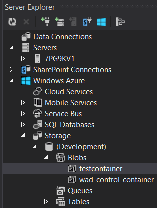

Azure Blob- ja Table Storage
Käytetään edellä tehtyä WorkerRole-projektia. Käytämme myös Fog-kirjastoa, jossa on tuki Azuren palveluille: Table Storagelle, Blob Storage, Queue Storage, Serice Bus ja Cache.
Ensimmäisenä on lisättävä connectionstringit Azuren storageille. Tämä tapahtuu näin:
Avaa deployment-projektin ServiceDefinition.csdef ja lisää sinne settingit: TableStorageConnectionString ja BlobStorageConnectionString. Nämä voivat emulator-ympäristössä olla tyhjät.
<?xml version="1.0" encoding="utf-8"?>
<ServiceDefinition name="FSharpAzure"
xmlns="http://schemas.microsoft.com/ServiceHosting/2008/10/ServiceDefinition"
schemaVersion="2013-10.2.2">
<WorkerRole name="WorkerRole1" vmsize="ExtraSmall">
<Endpoints>
<InputEndpoint name="Endpoint1" protocol="http" port="80" localPort="80" />
</Endpoints>
<Imports>
<Import moduleName="Diagnostics" />
</Imports>
<ConfigurationSettings>
<Setting name="TableStorageConnectionString" />
<Setting name="BlobStorageConnectionString" />
</ConfigurationSettings>
</WorkerRole>
</ServiceDefinition>
Muokkaa myös tiedostoja ServiceConfiguration.Cloud.cscfg ja ServiceConfiguration.Local.cscfg sisältämään vastaavat settingit:
<?xml version="1.0" encoding="utf-8"?>
<ServiceConfiguration serviceName="FSharpAzure"
xmlns="http://schemas.microsoft.com/ServiceHosting/2008/10/ServiceConfiguration"
osFamily="4" osVersion="*" schemaVersion="2013-10.2.2">
<Role name="WorkerRole1">
<Instances count="1" />
<ConfigurationSettings>
<Setting name="Microsoft.WindowsAzure.Plugins.Diagnostics.ConnectionString"
value="UseDevelopmentStorage=true" />
<Setting name="TableStorageConnectionString" value="UseDevelopmentStorage=true" />
<Setting name="BlobStorageConnectionString" value="UseDevelopmentStorage=true" />
</ConfigurationSettings>
</Role>
</ServiceConfiguration>
Emulaattorille kelpaa arvo value="UseDevelopmentStorage=true", mutta tuotannossa tämä connection-string on jotain muuta. Ohjeet siihen löytyy netistä.
F-Sharp skripti-tiedostojen käyttö
Näiden koodien ajaminen toimii interactive-ympäristöstä tiettyyn pisteeseen asti, mutta itse Azuren kutsukoodien suoritus ei. Voit siis lisätä koodien alkuun:
1: 2: 3: 4: 5: |
#if INTERACTIVE #r "../packages/Fog.0.1.4.1/Lib/Net40/Fog.dll" #r "System.Data.Services.Client.dll" #r "Microsoft.WindowsAzure.StorageClient.dll" #endif |
Näissä on huomattava se, että NuGet on voinut hakea sinulle eri version komponentista kuin mitä tässä esimerkissä. Joten jos Visual Studio alleviivaa rivin punaisella ja valittaa, että tiedostoa ei löydy, niin tämä voi johtua siitä, että sinulla on eri polussa uudempi versio siitä. Toinen F#:ssa tyypillinen tapa on lisätä projektiin yksi tiedosto tyyppiä Script File (*.fsx), joka suoritetaan vain interactive-tyylisessä scriptaus-ajoissa, mutta jää itsestään käännöksen ulkopuolelle. Nämä #r:t toimivat myös siellä, ja projektin .fs-tiedoston voi ladata käskyillä:
1: 2: |
#load "MyLogics.fs" open MyLogics |
Azure Blob Storage
Blob-storage on simppeli tietovarasto esim. tiedostoja varten. Avaa logiikka"luokka" (=tiedosto) ja lisää siihen seuraava koodi:
1: 2: 3: 4: 5: 6: 7: 8: 9: 10: 11: 12: 13: 14: 15: 16: 17: 18: 19: |
module MyLogics open Fog.Storage.Blob let containerName = "testContainer" let blobFileName = "testBlob" let blob = GetBlobReference containerName blobFileName let addToBlob text = text |> blob.UploadText open System open FSharp.Data let demoData = let ``scientist of the day `` = FreebaseData.GetDataContext().Commons.Computers.``Computer Scientists`` |> Seq.skip DateTime.Now.DayOfYear // |> Seq.head "Scientist of the day: " + ``scientist of the day ``.Name |
Nyt voit lisätä kutsun tähän WorkerRole.fs:n wr.OnStart() -metodissa:
1:
|
MyLogics.demoData |> MyLogics.addToBlob |
Kun ajat softan (F5), niin Server Explorer:iin (ei Solution Explorer) on (refresh:in jälkeen) ilmestynyt seuraava blobi, jonka voit tupla-klikata auki, jonka blob-listasta voit taas tupla-klikata itse tiedot auki:

Azure Table Storage
Azure Table Storage on NoSQL-henkinen tietovarasto.
Ohessa koodiesimerkki sen käyttöön:
1: 2: 3: 4: 5: 6: 7: 8: 9: 10: 11: 12: 13: 14: 15: 16: 17: 18: 19: 20: 21: 22: 23: 24: 25: 26: 27: 28: |
let ``Azure dvd table`` = "Dvd" [<Measure>] type stars open System open System.Data.Services.Common [<DataServiceKey("PartitionKey", "RowKey")>] type MyDvdEntity() = member val PartitionKey = String.Empty with get, set member val RowKey = String.Empty with get, set member val Timestamp = DateTime.UtcNow with get, set member val Name = String.Empty with get, set member val Rating = 0<stars> with get, set open Fog.Storage.Table let addDvd name rating = MyDvdEntity( PartitionKey = "myPartition", RowKey = System.Guid.NewGuid().ToString("N"), Name = name, Rating = rating ) |> CreateEntity ``Azure dvd table`` let updateDvd dvd = UpdateEntity ``Azure dvd table`` dvd let deleteDvd dvd = DeleteEntity ``Azure dvd table`` dvd |
Varsinainen Table Storage:n kyselykieli on varsin suppea. Sen käyttöön Fog-kirjasto ei tarjoa kätevää rajapintaa, joten joudut tekemään asian suoraa Azuren omaa rajapintaa vasten: Referoi Azure-SDK:n Microsoft.WindowsAzure.StorageClient.dll (joka löytyy oletuksena polusta: C:\Program Files\Microsoft SDKs\Windows Azure.NET SDK\v2.2\bin\Microsoft.WindowsAzure.StorageClient.dll ). Edellisen perään lisättynä, tässä mallikoodi kyselyn tekoon:
1: 2: 3: 4: 5: 6: 7: 8: 9: 10: 11: 12: |
open Microsoft.WindowsAzure.StorageClient let tableClient = BuildTableClient() ``Azure dvd table`` |> tableClient.CreateTableIfNotExist |> ignore let getUsers() = let context = tableClient.GetDataServiceContext() let query = query { for item in context.CreateQuery<MyDvdEntity>(``Azure dvd table``) do select item } // query makes IQueryable, so you can use System.Linq if you want. query.AsTableServiceQuery().Execute() |
from Microsoft.FSharp.Collections
Full name: Microsoft.FSharp.Collections.Seq.skip
Full name: Microsoft.FSharp.Collections.Seq.head
type MeasureAttribute =
inherit Attribute
new : unit -> MeasureAttribute
Full name: Microsoft.FSharp.Core.MeasureAttribute
--------------------
new : unit -> MeasureAttribute
from Microsoft.FSharp.Core
Full name: Microsoft.FSharp.Core.ExtraTopLevelOperators.set
type Guid =
struct
new : b:byte[] -> Guid + 4 overloads
member CompareTo : value:obj -> int + 1 overload
member Equals : o:obj -> bool + 1 overload
member GetHashCode : unit -> int
member ToByteArray : unit -> byte[]
member ToString : unit -> string + 2 overloads
static val Empty : Guid
static member NewGuid : unit -> Guid
static member Parse : input:string -> Guid
static member ParseExact : input:string * format:string -> Guid
...
end
Full name: System.Guid
--------------------
System.Guid()
System.Guid(b: byte []) : unit
System.Guid(g: string) : unit
System.Guid(a: int, b: int16, c: int16, d: byte []) : unit
System.Guid(a: uint32, b: uint16, c: uint16, d: byte, e: byte, f: byte, g: byte, h: byte, i: byte, j: byte, k: byte) : unit
System.Guid(a: int, b: int16, c: int16, d: byte, e: byte, f: byte, g: byte, h: byte, i: byte, j: byte, k: byte) : unit
Full name: Microsoft.FSharp.Core.Operators.ignore
Full name: Microsoft.FSharp.Core.ExtraTopLevelOperators.query
 Tuomas Hietanen, 2014,
Tuomas Hietanen, 2014,